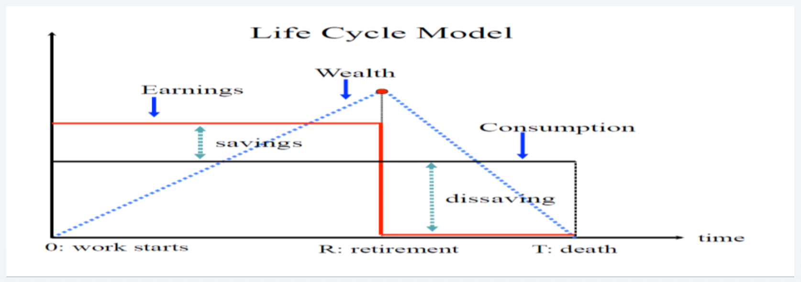

6.1 — Pension Economics: Basics
Chapter 6: The Economics of Old-Age Pensions
The Retirement Problem: How to Survive Old Age
Life is long and getting longer. People live much longer than they work — you might work for 40 years but spend over 20 years retired. The biggest question in pension economics is: how do you guarantee a safe income for those last 20 years? And more importantly — who do you trust to protect your money for decades?
The Core Goal: Every pension system in the world tries to solve one main problem — smoothing consumption over your whole life. This means saving enough while you are young so you don't starve when you are old. All systems rely on deep trust and long-term promises, either between families or between citizens and the government.
The Four Solutions: Throughout history, societies have invented four ways to survive retirement:
Hide Food and Gold
You literally save physical things (like grain or gold) while working and eat them later. This is terrible and inflexible — food rots, and things get stolen. Only ancient survival economies ever used this.
Have Many Babies
You pay for children now, trusting they will feed you when you get old. This is the oldest and most common trick in history. But it is very risky if your children move away or remain very poor.
Stock Market Magic
You save your salary in banks and the stock market, hoping it grows. This requires a stable country, good banks, and — crucially — highly intelligent, disciplined citizens who never forget to save.
Trust the Government
You join a national government pension system. The state becomes your ultimate parent, forcing everyone to pay and guaranteeing you a salary later. This is the main system used in rich, modern countries today.
The Three Pillars of Retirement
In the real world, countries rely on three main pillars to keep older people safe. Every country blends these differently depending on its history, culture, and number of young people.
👨👩👧 The Family Pillar
Where: Mostly in developing countries and parts of Asia.
Grandparents completely rely on their children for food and a home. This strategy only works if you have many children. As families get smaller today and people move to big cities, the family trick is failing.
📈 The Market Pillar
Where: Strongly used in the USA, Australia, and the UK.
Workers save their own money and invest it in the stock market. This requires excellent, honest banks and brilliant math skills. It sounds perfect on paper, but contains terrifying hidden dangers (see below).
🏛️ The Government Pillar
Where: Dominant in almost all of Europe.
The state forces everyone to participate. It is either a giant forced savings account or a direct tax where young workers pay for older people right now (PAYG). This is the safest, but most expensive model.
Why Relying Only on Markets is Dangerous
In a textbook, a perfect human would quietly save exactly enough money for retirement. In the messy real world, four massive unknowns make this almost impossible:
⏳ The Mystery of Death
How long will you live? Unlucky people outlive their savings and end up starving at age 95, while others die exactly at 65 and leave all their money behind. It is impossible to guess perfectly.
🏥 The Nightmare of Illness
Old age brings unpredictable biology. A single brutal heart attack or cancer diagnosis can instantly burn through an entire lifetime of savings.
📉 The Roulette of the Stock Market
The stock market is essentially a casino. If you were unlucky enough to retire during the 2008 Financial Crash, your life savings could drop by half overnight, while someone retiring in 2012 became rich. Pure luck controls your fate.
🧠 The "Lazy Brain" Problem (Myopia)
People hardly care about the future ($\delta < 1$). Psychologists prove that humans will almost always secretly spend their money on a new car today instead of saving for their 80th birthday.
The Two-Period Mathematical Model
Economists test human laziness using a simple two-stage life model. You only live two phases: Phase 1 (Working and Earning) and Phase 2 (Old Age and Sleeping).
The Math of Happiness: The human tries to maximize their total lifespan happiness (Utility):
$U = u(c_1) + \delta \cdot u(c_2)$
The tiny symbol $\delta$ (delta) measures your respect for the future. If $\delta$ is high, you love your future self. If $\delta$ is zero, you only care about partying tonight.
The Wallet Constraints:
Phase 1 (Working): You earn a wage $w$, you spend $c_1$, and you save $s$:
$c_1 = w - s$
Phase 2 (Old Age): You earn zero. You survive completely by eating your savings plus bank interest (r):
$c_2 = s \cdot (1 + r)$

The Life Cycle Model: In the green zone, you work and slowly build a mountain of cash. In the blue zone, you stop working and slowly drain the mountain to survive.
Case A: The Brilliant Citizen ($\delta = 1$)
Here, you value your future exactly as much as your youth. You split your spending perfectly so you never starve.
The Magic Math:
$s^* = \frac{w}{2}$
You smartly dump exactly half your salary into the bank. This is the perfect, beautiful solution.
Case B: The Lazy Idiot ($\delta = 0$)
Here, you could not care less about old age. You just want to buy expensive clothes today.
$\max [u(c_1) + 0]$
The Sad Result: You spend everything today ($c_1 = w$), and your savings are absolute zero ($s^* = 0$).
This creates a terrible problem for the President: when you get old and starve, the government will have to rescue you using emergency tax money from the younger kids.
The Political Nightmare of Pensions
Once the government steps in to force savings, pensions completely transform from a math problem into a vicious political battlefield.
-
One Size Fits Nobody
Everyone is different. The President has no idea who is smart and who is lazy, so he forces everyone to pay the exact same 15% tax. This highly annoys the smart savers.
-
A Deadly Political Weapon
Old people are the most powerful voters on earth. They vote in huge numbers. If a President tries to fix a broken pension system by cutting money, the grandparents will instantly vote to completely destroy him.
-
The War Between Generations
Pensions secretly move money two ways. They take cash from rich managers down to poor cleaners (fairness), but more dangerously, they violently take cash from today's young students and give it straight to today's retired grandparents. Managing this anger is deeply difficult.
The Six Ultimate Design Choices
When a country builds its pension machine, it must answer these six difficult questions:
Should it be Mandatory?
If we trust citizens, we let them volunteer. But since humans are lazy, voluntary systems fail completely. Most smart countries force everyone to pay a strict minimum to prevent starvation, and then let them volunteer any extra cash.
For Everyone, or Just the Poor?
Universal: Every grandpa gets a check, even if he is a billionaire. It's wildly expensive but very popular. Targeted: Only the poorest grandparents get the check. It's cheaper, but creates a "lazy trap" — why save your own money if the government only rescues you when you are broke?
Who takes the Risk (DB or DC)?
DB (Defined Promise): The state promises "We will give you $2000 a month forever, no matter what happens." The state takes all the risk. DC (Your Own Account): The state says "You just deposit money. Whatever it grows into is what you get." The citizen takes all the terrifying market risk.
Stock Market or Young Taxes?
Funded: We take your tax money, put it in the stock market ($r$), and let it grow. PAYG (The Direct Pipe): We take tax money from 25-year-olds today, and hand it directly to an 80-year-old today. There is zero savings account. This depends entirely on having lots of babies ($n$).
Who Handles the Money?
State Workers: They are slow but very cheap (no profit goals). Wall Street Bankers: They might make you rich, but they charge massive secret fees. A tiny 2% banker fee can easily destroy 30% of your total life savings.
Monthly Cash or One Giant Bag?
Monthly (Annuity): You get a small paycheck every month until you die. It's totally safe, but you can't give the money to your kids. Giant Bag (Lump Sum): They hand you $300,000 on your 65th birthday. You feel rich, but you might stupidly spend it all on a Ferrari and be starving by age 70.
The World's Favorite Systems
There is no "perfect" system. Every country chose a different weapon depending on their politics.
The Classic Pipe (PAYG DB)
Used by France, Germany, and the USA (Social Security). The state makes a hard promise and pays for it with taxes on young people right now. It is completely struggling as populations get older and run out of babies.
The Corporate Promise (Funded DB)
Used by old US and UK businesses. Your boss promises you a perfect retirement and builds a giant bank account for you. This is dying out quickly because companies went bankrupt trying to afford it.
The Solo Account (Funded DC)
Used by Australia and modern US workers (401k). You literally have your personal stock market account. If the market crashes, you are personally destroyed. You take all the risk.
The Swedish Illusion (Fake DC)
Created by Sweden and Italy. It looks exactly like a personal account, but it's completely fake. It's still the old PAYG pipe, but the math is beautifully balanced to trick politicians into acting responsibly. It fixes everything without needing the stock market.
Chapter 6.1 — The Pension Problem:
- People live much longer than they earn — we must desperately find a way to shift money from working years to retirement so people don't starve.
- The four tricks are: storing physical food (useless), relying on children (failing), stock market gambling (risky), and government guarantees (the modern standard).
- The math model shows that smart people save perfectly, while lazy people save exactly zero. Because human brains are lazy, the government is forced to step in and make saving illegal to avoid.
- Every system must choose 6 rules, balancing between safety (the state takes the impact) and freedom (you manage your own stock account).
- Every country chose a completely different system—from the 401(k) in America to the clever Swedish fake-account trick.